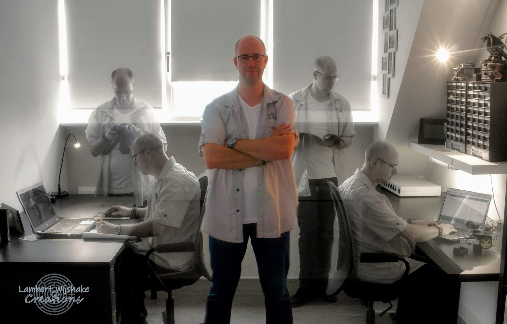

Dit ben ik.
Ik heet Lambert Wijshake. Ik ben geboren en getogen in de stad
kampen. Ik ben getrouwd en heb twee katten die ik als mijn kinderen
beschouw. Naast fotografie, fotobewerking, lezen en schrijven ben ik
actief in het wandelen. In 2010 begon ik met kleine stukken. Niet
lang erna liep ik algauw mee met diverse georganiseerde
wandeltochten. Toen ik begon met het plannen van wandelingen
doormiddel van het wandelnetwerk kwam ik in aanraking met lange
afstand wandelpaden.In 2015 was ik begonnen het bewandelen van het
Zuiderzeepad. Het Zuiderzeepad is een LAW. Dit staat voor "Lange
Afstand Wandelpad". In 2019 liep ik het laatste gedeelte van dit
pad. Daarna begon ik aan het Hanzestedenpad. Het Hanzestedenpad is
een Streekpad. Hier moet ik nog 5 atappes van wanddelen voordat ik
dit pad heb uitgewandeld.
